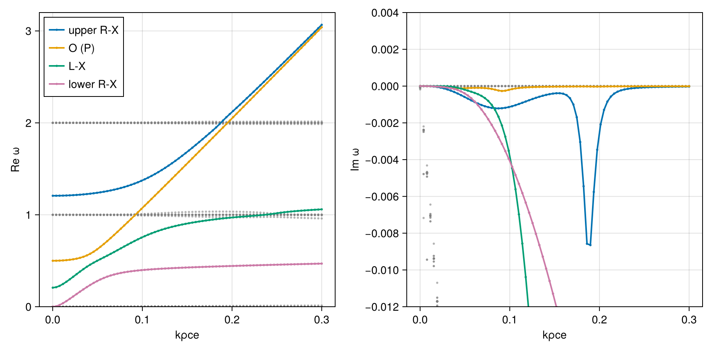
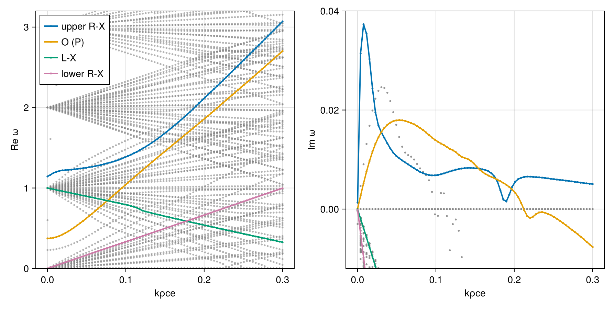
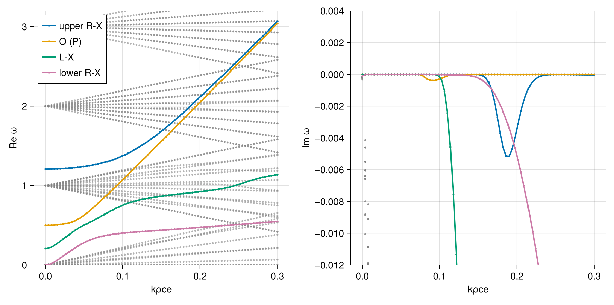

Case: R-, L-, and P-mode waves
This page reproduces the “case 1” benchmark (Cattaert et al. [7]) in BO-PBK Bai and Xie [8] for the R-, L-, and P-mode branches.
The configuration is a single electron population with a strongly non-Maxwellian parallel kappa index (κ∥ = 1) and nearly Maxwellian perpendicular index (κ⟂ = 200), with oblique propagation at $θ = 30°$.
Setup
using PlasmaBO
using PlasmaPopulations: gyrofrequency, thermal_speed
B0 = 1.0e-6 # [Tesla]
θ = deg2rad(30)
n = 2.43e6 # [m^-3]
T = 2555.0 # [eV]
κz = 1.0
κx = 200.0
e = Electron()
vth = thermal_speed(e, T)
electron = Plasma(Population(e, ProductBiKappa(; vth, kappa_perp = κx, kappa_para = κz); n); B0)
wce = abs(gyrofrequency(e, B0))
ρce = sqrt(1 - 1 / κx) * vth / wce # perpendicular kappa width θ⊥
kn = 1 / ρce # so that k/kn = kρce
kρ_scan = range(1.0e-4, 0.3; length = 80)
ks = kρ_scan .* kn5.881508223911365e-7:2.232739640950656e-5:0.0017644524671734095Analytic PBK (BO-PBK) solver
Every eigenvalue, for context, and the four branches tracked through them from their roots at $kρ_{ce} = 0.1$:
using CairoMakie
sweep = AngleSweep(; k = collect(ks), theta = θ)
at = Wavevector(; k = 0.1kn, theta = θ)
seeds = ["upper R-X" => 1.37366, "O (P)" => 1.07271, "L-X" => 0.75519, "lower R-X" => 0.39861]
function branch_diagram(plasma, alg; imlims = (-0.012, 0.004))
survey = solve(DispersionProblem(plasma, sweep), alg)
fig, (axr, axi) = dispersion_diagram(survey; k_unit = kn, omega_unit = wce, xlabel = "kρce")
for (name, ω0) in seeds
dispersion_diagram!((axr, axi), track(survey, ω0 * wce, at); k_unit = kn, omega_unit = wce, label = name)
end
axislegend(axr; position = :lt)
ylims!(axr, 0, 3.2)
ylims!(axi, imlims...)
return fig
end
branch_diagram(electron, BOPBK())
General HH solver
The same with the general Hermite-Hermite (HH) basis solver:
branch_diagram(electron, BOHH(; N = 4, J = 16); imlims = (-0.012, 0.04))
HH departs from PBK, even growing where PBK damps: the small parallel kappa index needs more Hermite terms than this truncation keeps. Its roots nearest the L-X and lower R-X seeds are not waves but pole roots of the expansion, near-straight lines ω ≈ nωce + c k (n = 1, 0).
For comparison, a Maxwellian electron population with the same thermal speed:
maxwellian = Plasma(Population(e, BiMaxwellian(; vth); n); B0)
branch_diagram(maxwellian, BOHH(; N = 3))